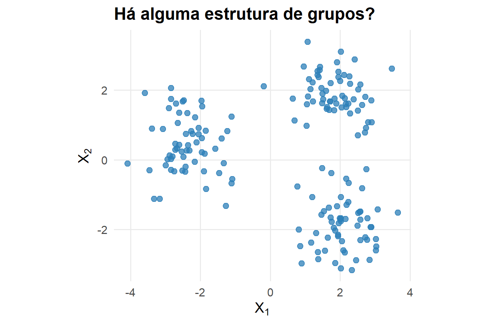
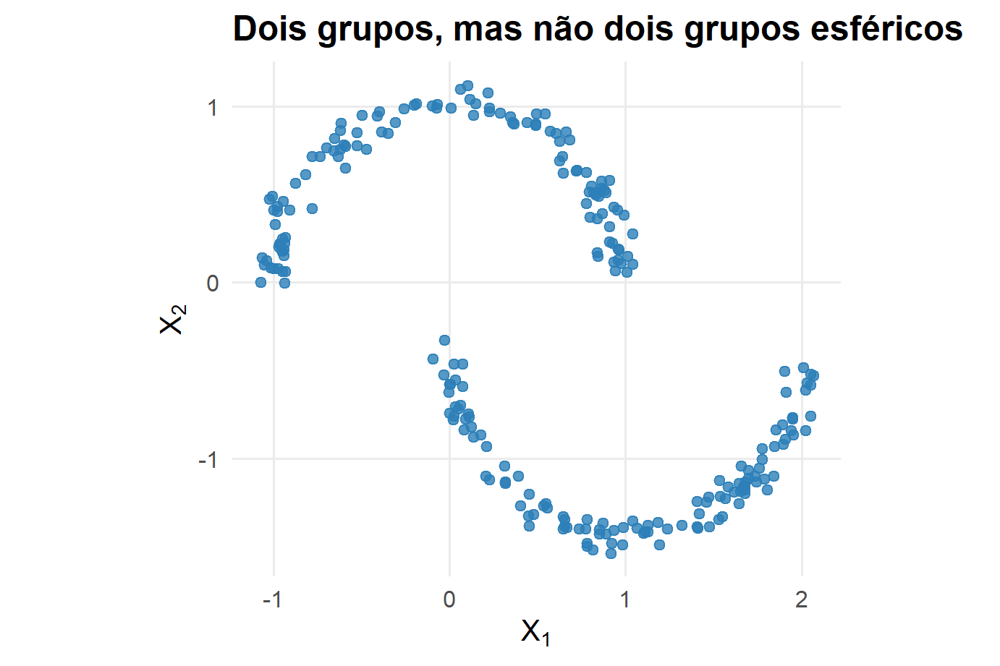

Análise de Agrupamento
Na Semana 12, construímos novas representações dos dados
Agora queremos responder a outra pergunta:
\[ \boxed{ \text{Existem grupos naturais entre as observações?} } \]
Sem uma variável resposta, a própria definição de grupo passa a fazer parte do problema
Em Estatística Multivariada, os alunos já estudaram métodos clássicos de agrupamento
Nesta disciplina, não vamos reconstruir toda essa teoria
Usaremos:
\[ \boxed{\text{K-means}} \qquad \boxed{\text{Hierárquico}} \]
como revisão e referência para introduzir o conteúdo novo:
\[ \boxed{\text{Agrupamento espectral}} \]
O problema de agrupamento
Agrupamento espectral
Ao final da semana, devemos ser capazes de:
Intuitivamente, queremos que
\[ \boxed{ \text{observações do mesmo grupo sejam semelhantes} } \]
e
\[ \boxed{ \text{observações de grupos diferentes sejam distintas} } \]
Mas isso depende de como definimos semelhança
Um grupo pode significar:
Diferentes algoritmos formalizam ideias diferentes de agrupamento

Queremos particionar as observações em \(K\) grupos
\[ C_1,\ldots,C_K \]
e representar cada grupo por um centroide
\[ \boldsymbol\mu_1,\ldots,\boldsymbol\mu_K \]
K-means procura minimizar a variabilidade dentro dos grupos
\[ \boxed{ J(C_1,\ldots,C_K) = \sum_{k=1}^{K} \sum_{i\in C_k} \left\| \mathbf x_i-\boldsymbol\mu_k \right\|^2 } \]
onde
\[ \boldsymbol\mu_k = \frac{1}{|C_k|} \sum_{i\in C_k} \mathbf x_i \]
O algoritmo alterna entre:
\[ \boxed{ c_i = \arg\min_k \left\| \mathbf x_i-\boldsymbol\mu_k \right\|^2 } \]
\[ \boxed{ \boldsymbol\mu_k = \frac{1}{|C_k|} \sum_{i:c_i=k} \mathbf x_i } \]
até estabilização
Cada observação é atribuída ao centroide mais próximo
Assim, os centroides induzem uma partição do espaço em células de Voronoi
Isso favorece grupos aproximadamente:
Considere:

Mesmo sabendo que
\[ K=2 \]
a geometria Euclidiana em torno de centroides pode não representar a estrutura desejada
Precisamos de uma noção diferente de proximidade:
\[ \boxed{\text{conectividade local}} \]
Métodos hierárquicos não exigem inicialmente uma partição fixa em \(K\) grupos
No procedimento aglomerativo:
\[ n \rightarrow n-1 \rightarrow n-2 \rightarrow \cdots \rightarrow 1 \]
grupos são sucessivamente fundidos
Precisamos definir:
\[ d(\mathbf x_i,\mathbf x_j) \]
\[ D(A,B) \]
O resultado depende de ambas
O método de Ward procura fundir grupos de modo a produzir o menor aumento possível na variabilidade intragrupo
Isso o aproxima conceitualmente do objetivo do K-means
O método hierárquico produz uma árvore de fusões
O corte do dendrograma em determinada altura gera uma partição
\[ \boxed{ \text{dendrograma} \rightarrow \text{escolha do corte} \rightarrow K\text{ grupos} } \]
Critérios como silhouette, estabilidade e conhecimento substantivo podem auxiliar a escolha
Para a observação \(i\),
\[ \boxed{ s(i) = \frac{b(i)-a(i)} {\max\{a(i),b(i)\}} } \]
Valores altos indicam melhor compatibilidade com o grupo atribuído # Por que precisamos de outro método?
K-means pergunta:
Qual centroide está mais próximo?
Para estruturas como duas luas, seria mais natural perguntar:
Quais observações estão conectadas por uma sequência de vizinhos semelhantes?
Essa mudança de perspectiva leva aos grafos
Representamos cada observação por um vértice
\[ V=\{1,\ldots,n\} \]
e conectamos observações consideradas semelhantes
O conjunto de dados passa a ser representado por
\[ \boxed{ G=(V,E) } \]
Definimos
\[ W=(w_{ij}) \]
onde
\[ w_{ij}\geq0 \]
mede a similaridade entre as observações \(i\) e \(j\)
Quanto maior \(w_{ij}\), mais forte é a conexão
Uma escolha comum é
\[ \boxed{ w_{ij} = \exp \left( -\frac{ \|\mathbf x_i-\mathbf x_j\|^2 }{ 2\sigma^2 } \right) } \]
para pares de observações que decidimos conectar
O parâmetro
\[ \sigma \]
controla a escala da vizinhança
apenas observações muito próximas apresentam forte similaridade
conexões permanecem fortes mesmo para observações mais distantes
Todas as observações são conectadas
\[ w_{ij}>0 \]
para praticamente todo par
Pode ser computacionalmente caro e incluir relações pouco informativas
Conectamos \(i\) a \(j\) apenas quando uma observação pertence à vizinhança da outra
\[ \boxed{ j\in N_k(i) } \]
Isso enfatiza a geometria local
Conectamos observações quando
\[ \boxed{ \|\mathbf x_i-\mathbf x_j\| < \varepsilon } \]
O parâmetro \(\varepsilon\) determina a escala de conectividade
Para cada observação,
\[ \boxed{ d_i = \sum_{j=1}^{n} w_{ij} } \]
Construímos a matriz diagonal
\[ \boxed{ D = \operatorname{diag}(d_1,\ldots,d_n) } \]
O Laplaciano não normalizado é
\[ \boxed{ L=D-W } \]
Essa matriz contém informação sobre a conectividade do grafo
Para qualquer vetor
\[ \mathbf f\in\mathbb R^n \]
temos
\[ \boxed{ \mathbf f^tL\mathbf f = \frac12 \sum_{i=1}^{n} \sum_{j=1}^{n} w_{ij} (f_i-f_j)^2 } \]
Se \(w_{ij}\) é grande, minimizar
\[ \mathbf f^tL\mathbf f \]
favorece
\[ f_i\approx f_j \]
Portanto, os autovetores associados aos menores autovalores produzem coordenadas que variam suavemente ao longo de regiões fortemente conectadas
Se o grafo possui \(K\) componentes conexas perfeitamente separadas, então o Laplaciano possui
\[ \boxed{ K \text{ autovalores iguais a }0 } \]
Os autovetores correspondentes identificam essas componentes
Em geral, os grupos não estão perfeitamente desconectados
Nesse caso, buscamos autovetores associados aos menores autovalores
Eles fornecem uma aproximação contínua da estrutura de componentes do grafo
Considere os autovetores
\[ \mathbf u_1,\ldots,\mathbf u_K \]
associados aos menores autovalores relevantes de \(L\)
Formamos
\[ \boxed{ U = [ \mathbf u_1,\ldots,\mathbf u_K ] \in\mathbb R^{n\times K} } \]
A linha \(i\) de \(U\) fornece uma nova representação da observação \(i\)
\[ \boxed{ \mathbf x_i \longrightarrow \mathbf z_i = U_{i\cdot} } \]
Agora agrupamos os pontos
\[ \mathbf z_1,\ldots,\mathbf z_n \]
No espaço original:
\[ \boxed{ \mathbf x_i \in\mathbb R^p } \]
No espaço espectral:
\[ \boxed{ \mathbf z_i \in\mathbb R^K } \]
Aplicamos K-means aos \(\mathbf z_i\)
O agrupamento espectral não elimina o K-means
Ele muda a representação na qual o K-means é aplicado
\[ \boxed{ X \rightarrow W \rightarrow L \rightarrow \text{autovetores} \rightarrow Z \rightarrow \text{K-means} } \]
Duas observações podem estar relativamente distantes em distância Euclidiana
Mas podem pertencer à mesma estrutura se houver uma sequência de fortes conexões locais entre elas
A representação é determinada pela conectividade do grafo
Regiões fortemente conectadas tendem a ficar próximas
Regiões fracamente conectadas tendem a se separar
\[ \boxed{ \text{distância Euclidiana} \rightarrow \text{estrutura de conectividade} } \]
Agrupa em torno de centroides
\[ \boxed{ \text{proximidade ao centro} } \]
Constrói uma sequência de fusões baseada em uma regra de ligação
\[ \boxed{ \text{distância entre grupos} } \]
Transforma a estrutura de similaridades antes de agrupar
\[ \boxed{ \text{conectividade} \rightarrow \text{embedding} \rightarrow \text{partição} } \]
| Aspecto | K-means | Hierárquico | Espectral |
|---|---|---|---|
| objeto central | centroides | distâncias/ligações | grafo |
| grupos não convexos | dificuldade | depende da ligação | adequado |
| requer \(K\) | sim | não inicialmente | geralmente sim |
| escala dos dados | importante | importante | importante |
| custo | baixo | moderado/alto | pode ser alto |
| hiperparâmetros | \(K\) | distância, ligação, corte | grafo, escala, \(K\) |
Podemos avaliar:
Se houver rótulos externos não usados no ajuste, medidas como ARI podem comparar partições
\[ \boxed{ \text{estrutura matemática} \neq \text{necessariamente estrutura substantiva} } \] # Síntese da Semana 13
\[ \boxed{ \min \sum_{k=1}^{K} \sum_{i\in C_k} \| \mathbf x_i-\boldsymbol\mu_k \|^2 } \]
É eficiente, mas sua geometria favorece grupos compactos em torno de centroides
\[ \boxed{ \text{distância} + \text{ligação} \rightarrow \text{dendrograma} } \]
Produz uma estrutura de agrupamentos em múltiplas escalas
\[ \boxed{ X \rightarrow W \rightarrow D \rightarrow L \rightarrow U \rightarrow K\text{-means} } \]
Troca a geometria original por uma representação baseada em conectividade
Métodos de agrupamento diferem principalmente pela noção de estrutura que procuram preservar
\[ \boxed{ \text{centroides} \qquad \text{distâncias} \qquad \text{conectividade} } \]
EST335 — Semana 13